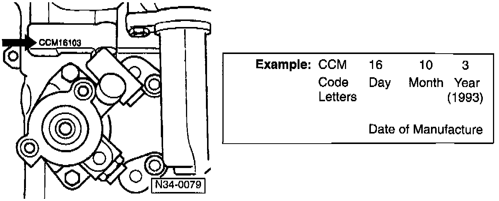
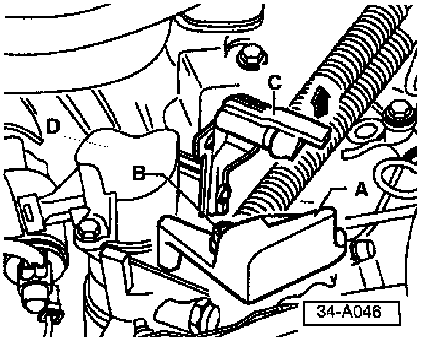
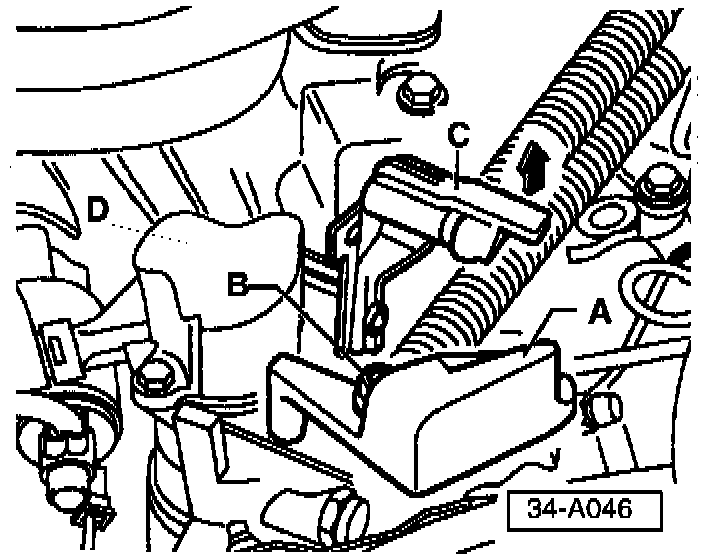
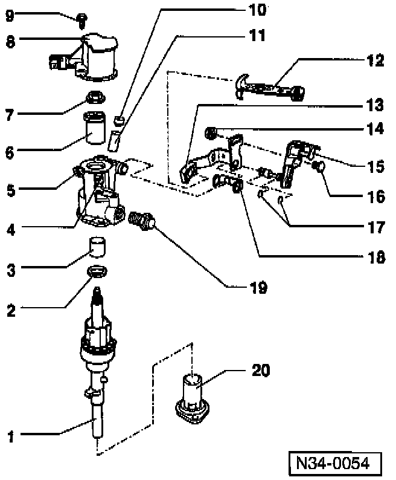
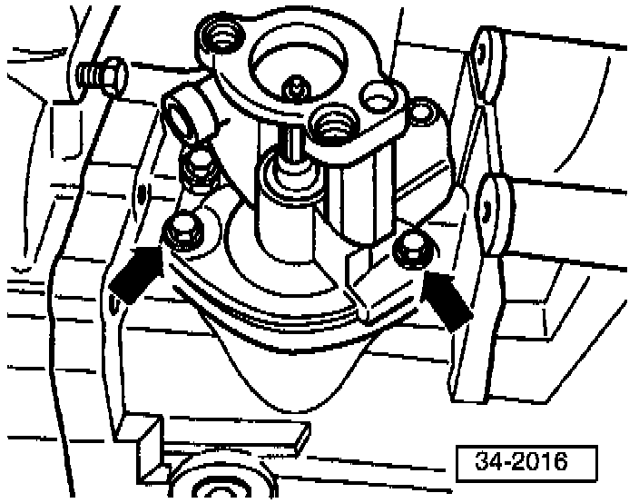
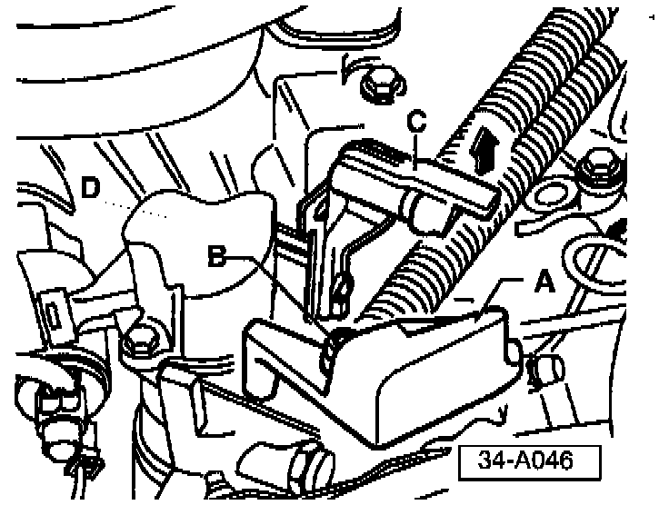

M/T - Shifter Difficult to Move/Hard Reverse Gear Shift
Group: 34Number: 97-02
Date: Apr. 10, 1997
Subject:
Shifter Difficult to Move Side to Side and Transmission is Hard to
(or Will Not) Shift Into Reverse
Model(s):
Golf, GTI, Jetta w/02A Trans 1996 --> 1997
Passat w/02A, 02C Trans 1996 --> 1997
Condition
Shifter Lever is difficult to move from side to side and transmission is hard to (or will not) shift into reverse gear on transmissions produced beginning August 1, 1995 to September 25, 1996.

Transmission build date can be identified by code letters and date of manufacture -arrow-.
Note:
Additional data depends on Manufacture The transmission code letters are also shown on the vehicle identification plates
Condition may be caused by selector shaft binding in selector shaft housing bearing.
Service
If condition exists:
Transmission must remain in neutral through out procedure.

- Remove electrical connector from back-up light switch housing.
- Remove nut -B- and balance weight -A- from gear selector cable attachment.
- Remove gear selector cable from gear selector lever.

- Disconnect gate selector cable from actuating arm/relay lever-C- by lifting lug in direction of -arrow-.
- Remove 2 bolts securing back-up light switch housing -D- and remove housing.

- Remove self locking nut -7- and back-up light switch cam sleeve -6-.
Note:
At this point verify that selector shaft is still binding by moving shift lever -12- up and down.
If selector shaft moves freely (does not bind);
- Check cables and linkage for damage.
If selector shaft still binds:
- Remove gear shift lever -12-.
- Replace selector shaft housing -4-.
Selector shaft housing, replacing

- Remove selector shaft housing attachment bolts -arrows- (tap housing lightly with brass or plastic mallet to loosen).
- Remove selector shaft and housing from transmission.
To remove selector shaft from housing:
- Invert housing and work shaft up and down until shaft comes free of housing.
- Slide selector shaft into new selector shaft housing Part No: 02A 301 231H (ensure that selector shaft moves freely in housing).
- Remove selector shaft from new housing and install into transmission.
- Install new selector shaft housing using sealant AMV 188 200 03 or equivalent.
^ Torque bolts to 25 Nm. (18 ft. lb.).
- Reinstall gear shift lever.
- Reinstall back-up light switch cam sleeve (always use a new self locking nut).
^ Torque nut to 25 Nm. (18 ft. lb.).

- Lift lug -C- in direction of -arrow-and reinstall gate selector cable to actuating arm/ relay lever.
- Reconnect gear selector cable to gear selector lever (position cable pivot in center of slot on selector lever).
- Reinstall balance weight -A-.
- Reinstall back-up light switch housing -D-.
- Reinstall back-up light switch electrical connector.
- Road test vehicle.
When procedure applies to vehicles within warranty use the following:
Part Identifier: 3445
Labor Operation: 3445510 90 TU